Standalone Calibration Program - User Guide
This tutorial guides you through the entire process from downloading the program to completing robot arm calibration. Follow these steps to finish visual calibration and control your phone screen directly with a mouse.
Requirements
Before you begin, make sure the following conditions are met:
Download & Extract
The downloaded archive is approximately 160 MB. Actual size may vary slightly due to updates. Find a disk with sufficient space, copy the archive there, and extract it. It's recommended to create a dedicated directory, for example D:\RobotArmKit.
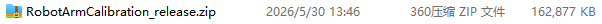
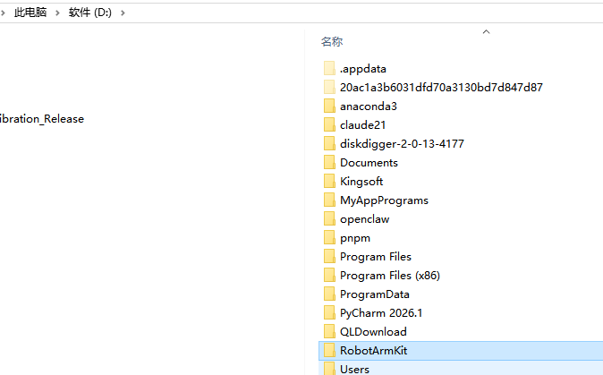
File Structure
After extracting, you'll see the following files and folders:
| Name | Description |
|---|---|
| 📁 _internal | Runtime libraries and dependencies (no manual action needed) |
| 📁 calibrations | Calibration history; supports saving multiple calibration results |
| 📁 robot-arm-service | Robot arm hardware driver; batch files for auto install/uninstall |
| 📁 tutorial_assets | Tutorial images |
| 📄 User Guide.html | Web-based tutorial and FAQ |
| 📄 phone_calibration_app.py | Python calibration script (run on phone) |
| 📦 pydroid-3-8-3-arm64.apk | Pydroid 3 official APK (Python environment for phone) |
| ⚙️ RobotArmCalibration.exe | Main program (run on computer) |
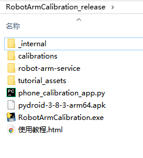
Launch the Program
Double-click to run RobotArmCalibration.exe. A command line window will appear showing basic information.
- • First run: Automatically installs robot arm hardware drivers
- • Subsequent runs: Skips driver installation, enters main interface directly
After successful startup, the camera feed is displayed with an info panel on the right.
Important: The program needs to listen on port 12345 for phone communication. If the firewall blocks it, you must allow it to continue.
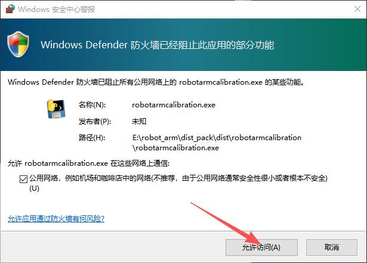
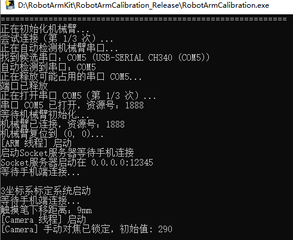
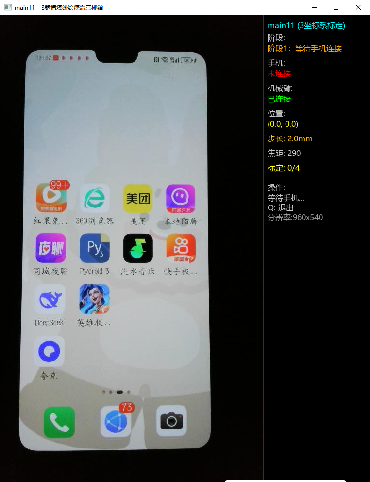
Phone Preparation
Send pydroid-3-8-3-arm64.apk to the phone via WeChat File Transfer. Tap Allow to install after receiving.
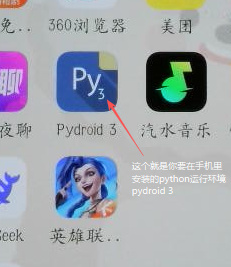
After Pydroid 3 is installed, continue by sending phone_calibration_app.py to the phone. After receiving, tap File → Download.
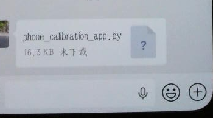
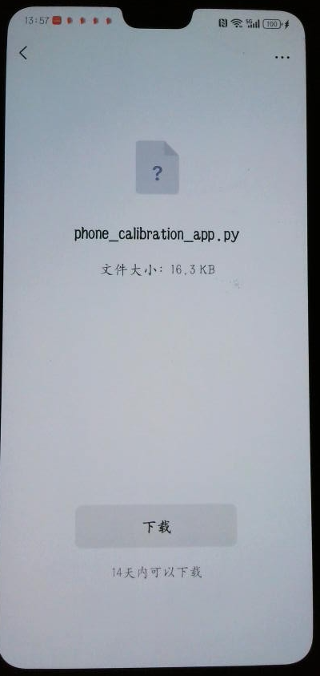
After downloading, open it with the newly installed Pydroid 3.
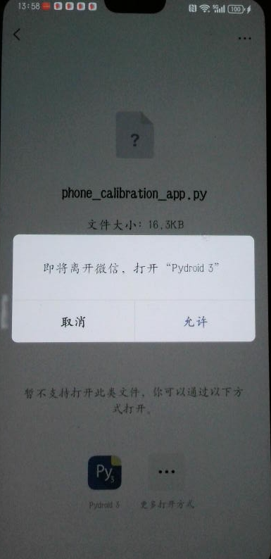
The default view shows the new tab.
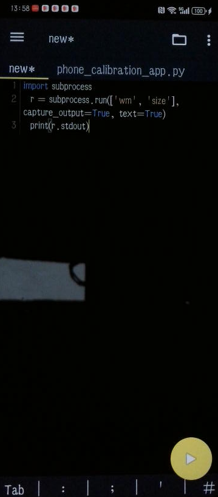
You need to switch to the phone_calibration_app.py tab.
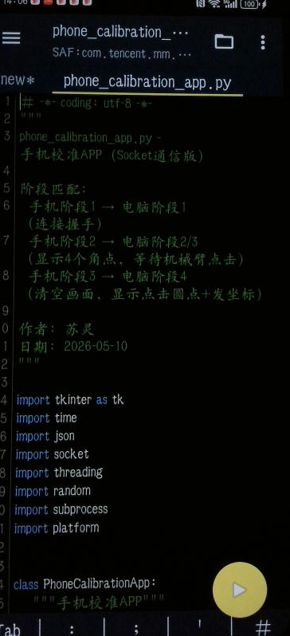
Network Configuration (Critical Step)
The phone and computer programs need to communicate for precise calibration, so both must use the correct LAN IP.
Open your computer's Network Settings, click "Properties", and find the IPv4 Address and note it down. Example: 192.168.31.83
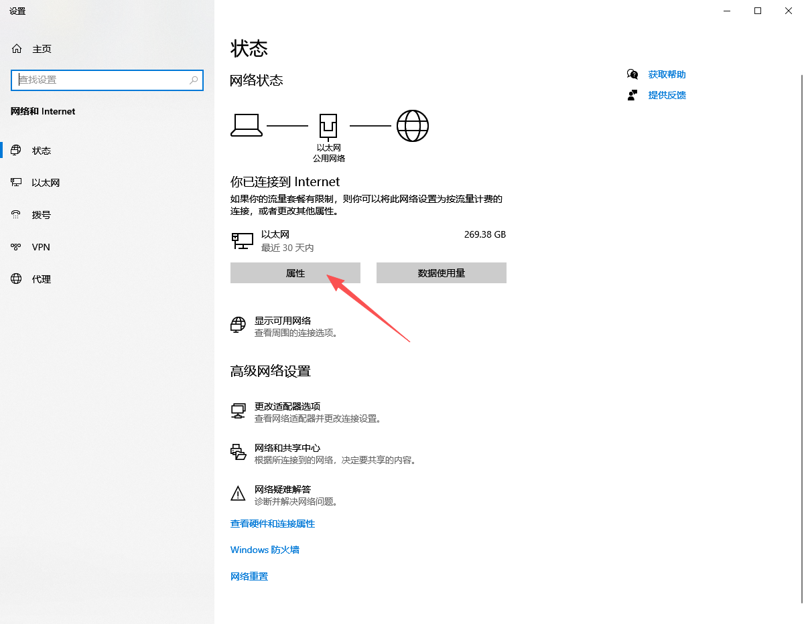
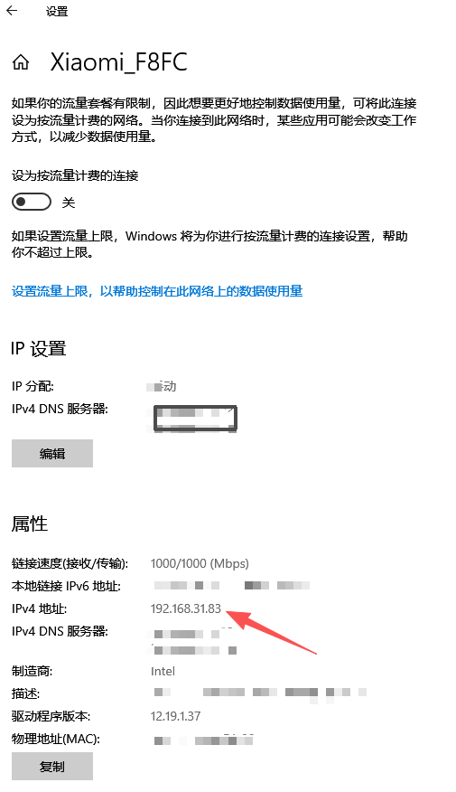
On the Pydroid 3 screen, scroll up to around line 283 and change the IP to your computer's actual LAN IP.
When ready, tap the Run button (▶) in the bottom-right corner. Four dots appear in the corners of the phone screen. The computer will show "Phone Connected".
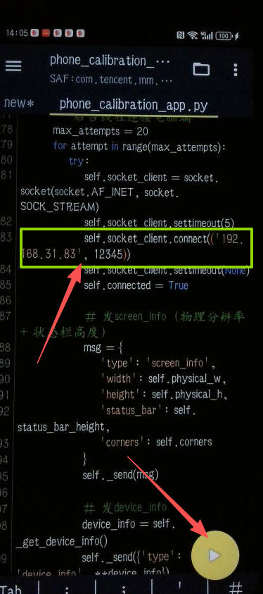
Corner Detection & Confirmation
The program continuously searches for the four corner dots. Identified corners show "Stable". If there is glare or interference, a point may show "Jumping".
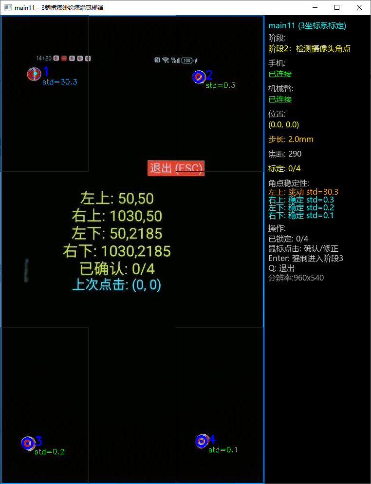
- The cursor is cross-shaped; try to center the crosshair on the dot before clicking
- Auto-detected corners are marked with blue circles
- User-confirmed points are marked with red circles
- After all 4 corners are marked, you will see "All Points Locked"
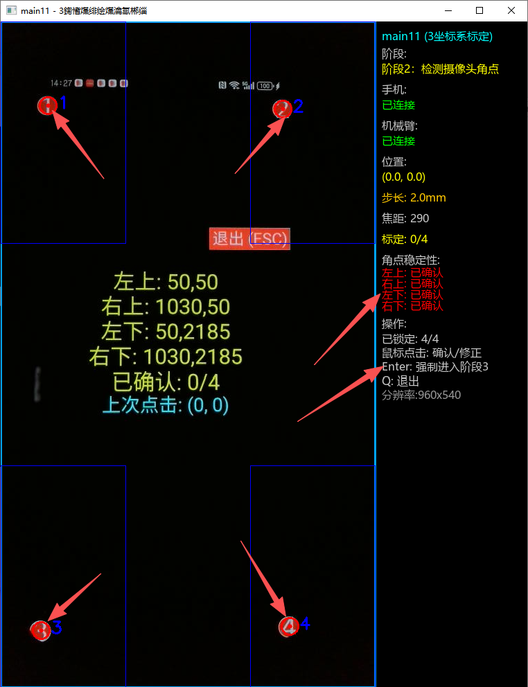
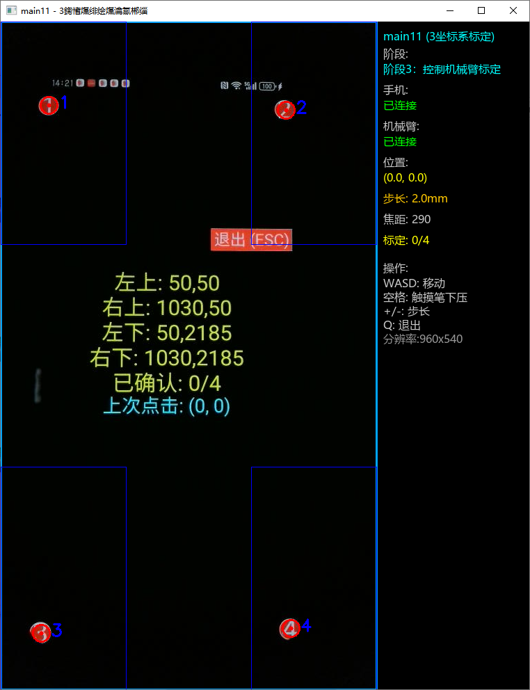
Phase 3 - Robot Arm Calibration
The computer prompts that you have entered Phase 3. You can now control the robot arm via keyboard.
• Default step size: 2.0mm
• Press ↑ ↓ to adjust step size (0.1mm ~ 10.0mm)
• Holding continuously will cause repeated movement, but try not to hold too long
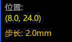
• Press down: Press Spacebar
• Lift: Press Spacebar again
Default press depth is 9mm. The stylus has flex capability, so normal phone placement will not cause damage.
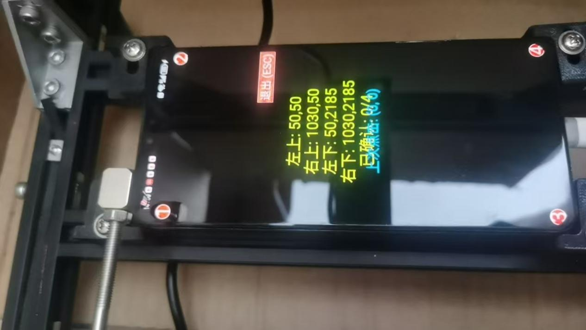
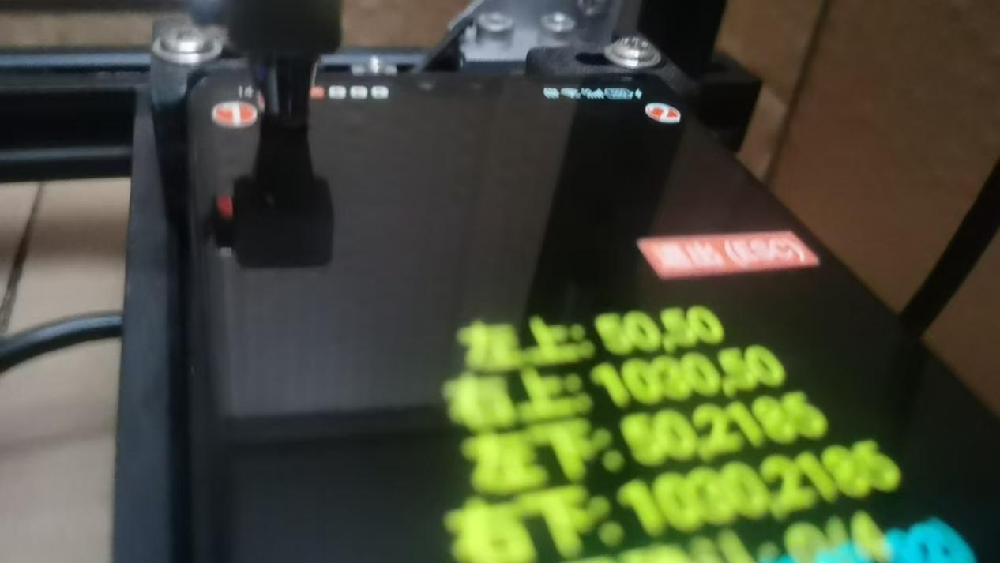
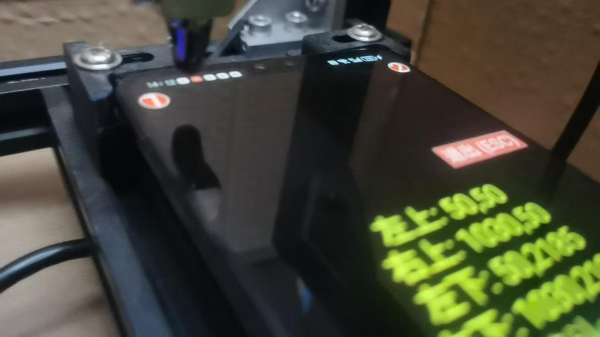
Control the robot arm to move above each of the 4 dots in sequence, press-lift the stylus, and attempt to tap the dot. After each tap, the phone screen shows "Last Click" coordinates.
Each successful tap shows "Confirmed N/4".
After all 4 points are correctly tapped, the robot arm automatically resets and enters Phase 4.
Verify Calibration Results
The phone screen displays 8 random points. Click the points you see on the computer screen with your mouse; the robot arm automatically moves to the corresponding position, presses, and lifts.
- The computer display shows white dots marking click positions
- The right panel shows: click position, expected target, actual coordinates
- Typically the error is within a few pixels
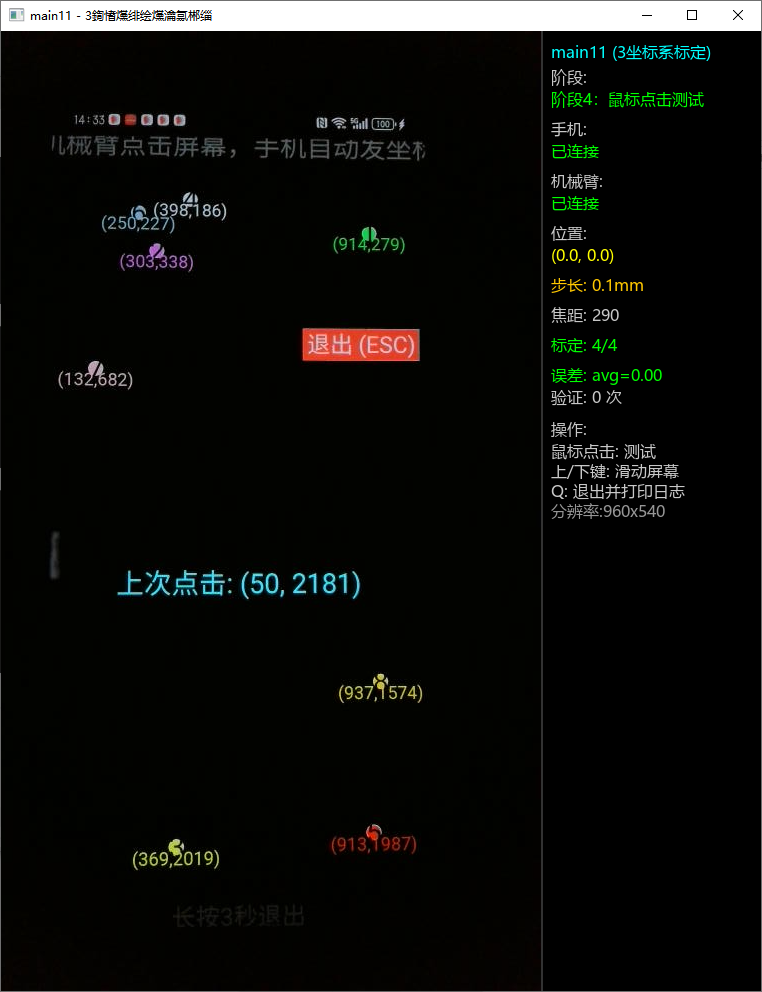
Save & Reuse
Click "Exit (ESC)", then press Q on the computer to exit. The calibration results are automatically saved to the calibrations directory.
On restart, the CMD window prompts that calibration records were found:
- Enter 1 + Enter: Use existing calibration
- Enter 0 + Enter: Re-calibrate
After selecting an existing calibration, Pydroid 3 is no longer needed on the phone. You can click positions directly on the computer screen, as if operating the phone with your finger.
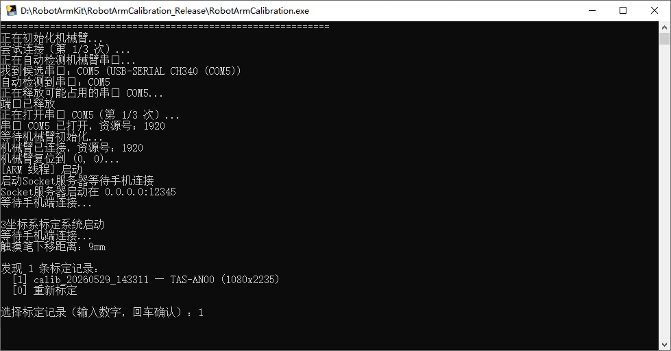
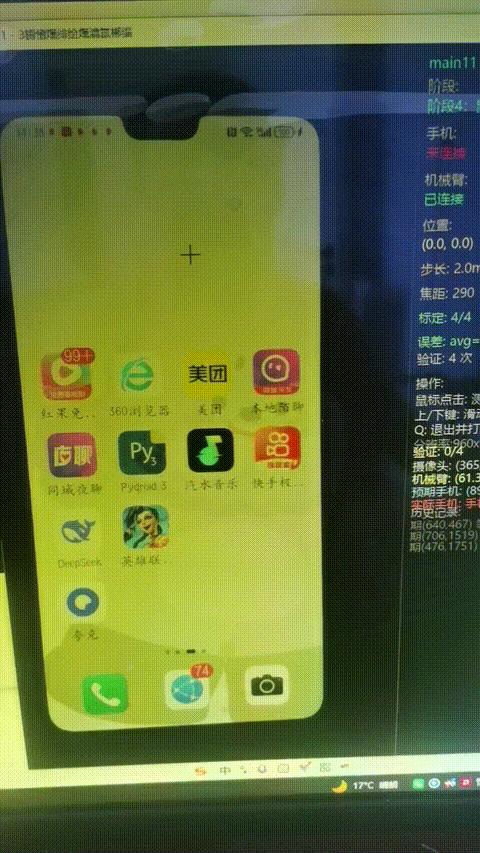
Frequently Asked Questions
1. Is the robot arm properly powered (blue LED steady near the power jack?)
2. Is the robot arm's own blue USB cable properly connected to a computer USB port?
3. Is the black USB cable extending from the top camera properly connected to a computer USB port?
After confirming all three, restart the program.
Find the
phone_calibration_app.py file you transferred from the computer.(If not yet transferred, you can send it from the computer via WeChat/QQ/USB cable)
If unsure, you can search online for Pydroid 3 tutorials.
Or send your actual issue to the author at hamlet0168@163.com
calibrations directory under the extracted root.You can save multiple calibration results. If you re-calibrate multiple times, each result is saved. You can use this feature to maintain separate calibration files for different phones (e.g., iPhone or Huawei).
When starting the program, all calibrations are listed and you can freely choose which one to use.
Enter the corresponding number and press Enter.
Calibration files are named in timestamp format as JSON files, such as
calib_20260529_143311.json.Also, every time you readjust the phone holder, even slightly, you should re-calibrate; the previous calibration file becomes invalid.